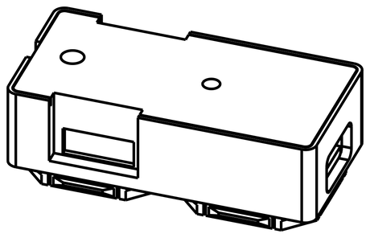

What you have#
The main module#
One per panel. It has the USB-C socket, the processor that runs the bus, and two tile connectors.

| Connects to | Driver Station laptop, USB-C |
| Presents itself as | A game controller — 32 buttons, 4 axes |
| Drives | Up to 31 tiles on one chain |
| Also carries | The CFG button |
The main module holds the whole configuration: which key is which button, what colour each LED is, and which USB personality to use. Tiles hold none of it, so a tile can be swapped for an identical one without reconfiguring anything.
The tiles#
Every tile has a small processor, a transceiver and two connectors. They differ in their keys, encoders or display.
| Tile | What it is | Keys | Grid |
|---|---|---|---|
| mx1 / mx1rgb | A single Cherry MX hot-swap key | 1 | 2 × 1 |
| mx1 1x1 / mx1rgb 1x1 | The same key on the smallest board, cables out the back | 1 | 1 × 1 |
| mx3 / mx3rgb | Three keys in a row | 3 | 3 × 1 |
| mx4 / mx4rgb | Four keys as a WASD cluster | 4 | 3 × 2 |
| mx6rgb | Six keys in a 3 × 2 grid, an RGB LED under each | 6 | 3 × 3 |
| arc4 | Four arcade buttons, each on a 3-pin JST PH lead | 4 | 2 × 1 |
| enc1 | One rotary encoder with a push-to-click shaft | 1 encoder + 1 key | 2 × 1 |
| enc2 | Two rotary encoders with push-to-click shafts | 2 encoders + 2 keys | 2 × 2 |
| disp1 | A 128 × 32 text panel — a readout, not a control | none | 2 × 1 |
| disp2 | A 160 × 128 colour display: text, and stored pictures | none | 2 × 2 |
| screenkey1 | One key whose cap is a 128 × 128 colour screen | 1 | 2 × 1 |
The rgb versions are the same board with a colour LED under every key. See LED colours.
The splitter, a small board with no processor, has four connectors so the chain can branch.
Every tile, with pictures and what each can do, is on The tiles.
disp1, disp2 and screenkey1 are the display tiles. On screenkey1 the screen is the key’s legend. See Display tiles and legends.
Keys on a tile are numbered from 0. Buttons the Driver Station sees are numbered from 1. See Binding buttons.
Hot-swap means the key switches push in and pull out by hand, with no soldering.
What you supply#
- A USB-C cable to the Driver Station laptop. That is the only power the panel needs.
- Tile cables — one per link in the chain, six-way JST GH, straight through.
- Key switches and keycaps for the MX tiles, or arcade buttons for
arc4. Any Cherry MX-compatible switch fits. - Cases, if you want them: 3D-printed, for an openGrid board. See Printing the cases.
What the Driver Station sees#
| Personality | Driver Station | You get |
|---|---|---|
frc |
FRC (Windows) | 32 buttons and 4 axes on one HID gamepad |
xinput |
FTC (Driver Hub / phone) | An Xbox-360-style gamepad; the 32 buttons map onto its controls |
Change it in the config app, unplug, plug back in. See The config app.